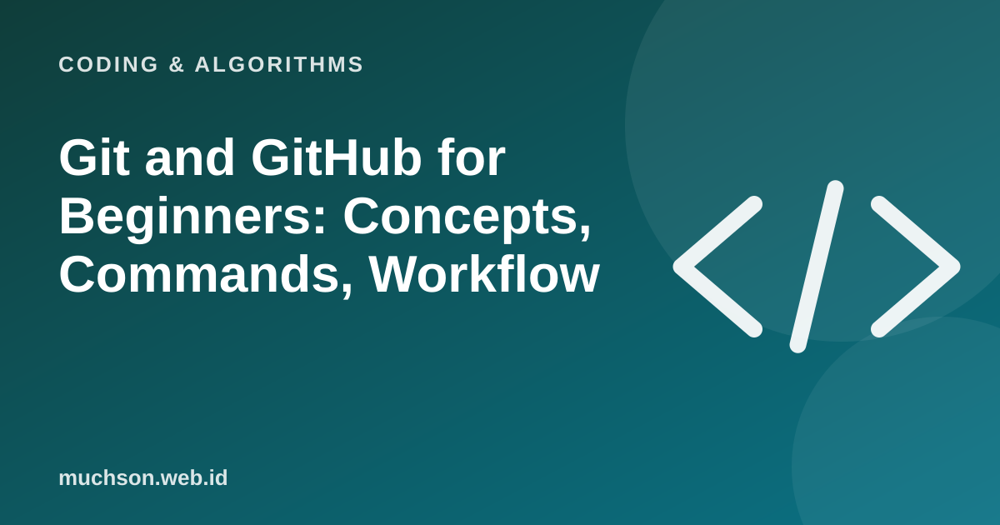

Home › Articles › Coding & Algorithms
Coding & AlgorithmsGit and GitHub for Beginners: Concepts, Commands, Workflow
Ever saved a file called "report_final_revised_new_FIX2"? Git solves that problem for code: every change is recorded, can be undone and can be worked on together without overwriting one another.

Git and GitHub are different
Text description of the diagram
Git
- A program on your computer
- Records the history of changes
- Works without internet
- Built as a command-line tool
GitHub
- A web service for storing Git repositories
- Sharing and collaboration
- Pull requests and code review
- Similar services: GitLab, Bitbucket
Core concepts
The everyday workflow
Text description of the diagram
- Change files: in the project folder
- git add: choose what to save
- git commit: save with a message
- git push: send to GitHub
| Command | Function |
|---|---|
| git init | Start tracking a folder with Git |
| git status | See which files changed |
| git add . | Stage all changes for a commit |
| git commit -m "message" | Save the changes with a message |
| git log --oneline | See a short commit history |
| git branch name | Create a new branch |
| git switch name | Move to a branch |
| git merge name | Merge a branch into the current one |
| git push | Send commits to GitHub |
| git pull | Fetch the latest changes from GitHub |
An important warning
Never commit secret keys, passwords or .env files. If you already have, assume the secret has leaked, change it and remove it from the history. Use a .gitignore file to exclude sensitive files.
FAQ
Do I need GitHub to use Git?
No. Git runs on your own computer. GitHub is useful for backup, sharing and team work.
How do I undo the last commit?
There are several ways depending on the situation (revert or reset). Learn the difference before using a command that erases history.
What is a conflict?
It happens when two changes touch the same part and Git cannot decide. You choose the final result by hand.